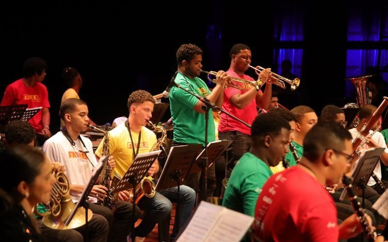
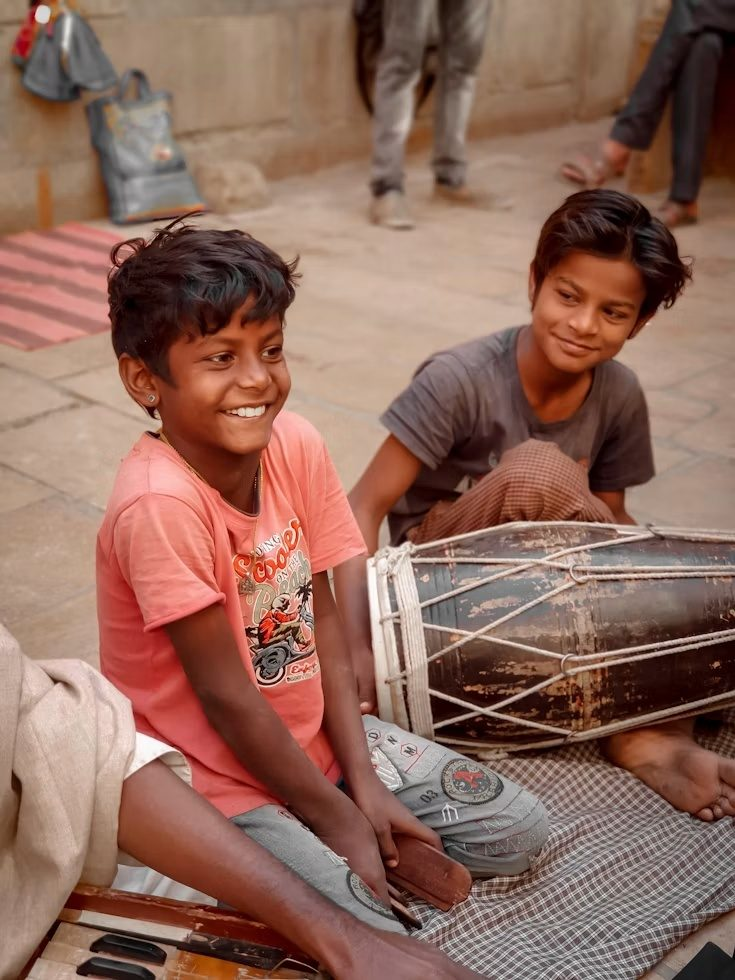

Projetos Sociais
Oficinas de Musicalização
Projeto ativoAtividades introdutórias de música destinadas a crianças e adolescentes, trabalhando ritmo, percepção musical e canto coral. As oficinas também promovem o contato com músicos da comunidade, proporcionando novas experiências e despertando sonhos, talentos e objetivos por meio da arte.

Doações
Doações abertasCampanha destinada à arrecadação de recursos para melhorias nas salas e instalações do projeto, além da doação de instrumentos musicais novos ou usados, contribuindo para ampliar o acesso dos participantes às atividades oferecidas.

Participe do Projeto
Existem diferentes formas de apoiar o Projeto Som que Transforma. Você pode realizar doações de instrumentos e materiais ou participar das atividades como voluntário.
Atendimento pelo WhatsApp
Escaneie o QR Code abaixo para iniciar um atendimento automatizado e obter mais informações sobre como participar.
QR Code demonstrativo